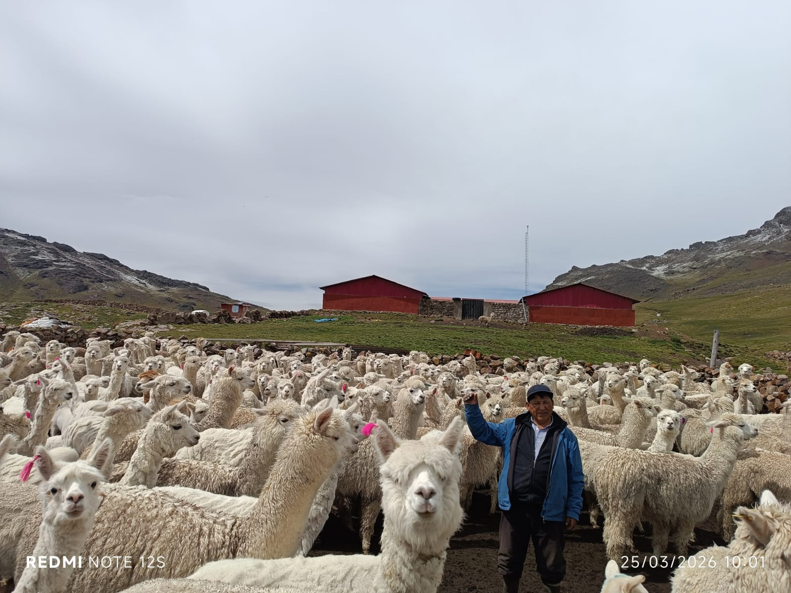
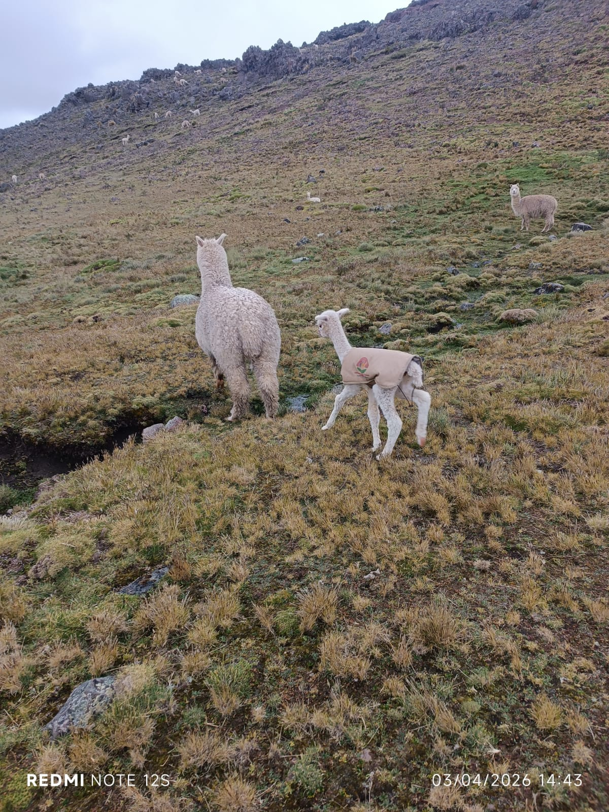

200 → 430
Crecimiento del hato Huacaya
Recuperación y mejora de la masa ganadera
~95%
Reducción de mortalidad de crías
Protección frente a heladas extremas
< 19 μm
Mayor rendimiento y finura
Mejora de la fibra de alpaca
Liquidación oficial de infraestructura · TİKA – APCI / Inversiones Aguilar
Inversión total: $73,736.44 USD
Acta firmada en Huamanrazu Pata
Fondos de cooperación ejecutados directamente por la contratista Inversiones Aguilar y entregados en obras y bienes físicos a la comunidad. Acta oficial suscrita por Ursula Tunque Quispe en el Centro de Producción de Alpacas Estancia de la Amistad, Sector Huamanrazu Pata, Comunidad de Santa Bárbara.
Casa de Alpacas
$48,586.44
Módulo productivo y refugio térmico comunal.
Potreros con mallas y postes
$18,100.00
Postes metálicos y cerco de clausura de praderas.
Pararrayos de protección
$3,650.00
Sistema de seguridad ante descargas eléctricas.
Tanques y tuberías
$3,400.00
Almacenamiento de agua y mangueras HDPE.
I etapa (2022): $34,686.44 USD · II etapa (2024): $39,050.00 USD
2021 · Hito fundacional
Apertura de Carretera Afirmada y Electrificación Solar
Apertura de 30 km de carretera afirmada que conecta Huancavelica con la Unidad Productiva Huamanrazu, permitiendo el ingreso vehicular técnico. Dotación de panel solar para suministro eléctrico básico in situ.
Municipalidad / Provías Descentralizado · Recursos propios
2021–2022 · Pasturas
Recuperación de Pastos y Clausura de 50 Hectáreas
Instalación de mallas ganaderas y postes para clausurar y recuperar 50 ha de praderas altoandinas degradadas, iniciando el manejo regenerativo planificado de pastos naturales para el ganado.
Aliado estratégico: Agro Rural / MIDAGRI
2022 · Recurso hídrico
Conducción Hídrica HDPE y Siembra de Agua
Tendido de 2.5 km de tubería HDPE para abastecer bebederos y consumo humano. Apertura de zanjas de infiltración y siembra de más de 2,500 plantones de kolle, pino y quinual, combinados con avena forrajera Mantaro 15.
Trabajo comunal · Más de 2,500 plantones
2022 · Infraestructura mayor
Construcción de la Casa de las Alpacas
Cobertizo técnico de abrigo para albergar y proteger 400 alpacas durante heladas severas y temporales de nieve, equipado con sistema pararrayos de 3 cuerpos para salvaguardar la vida animal y de los pastores.

TİKA / APCI · Inversión: $48,586.44 USD
2023–2024 · Almacenamiento
Instalación de Tanques y Potreros Técnicos
Tanques y mangueras HDPE para riego y bebederos, junto con mallas ganaderas, postes metálicos y alambre galvanizado para la división técnica en potreros de pastoreo rotativo.
Cooperación: Embajada de Turquía · Inversión: $21,500.00 USD
2024 · Manejo pecuario
Manga de Manejo Alpaquero de Piedra Rústica
Construcción comunal de una manga de manejo técnico para dosificación antiparasitaria, pesaje, esquila tecnificada sin estrés y labores reproductivas controladas.

Autogestión comunal · Sanidad animal
2026 · Conectividad & energía solar
Estación Starlink, Sistema Solar y Módulo Habitacional
Instalación técnica ya ejecutada y operativa para monitoreo y comunicación internacional.
Terminal Starlink
S/ 2,500
Panel + batería
S/ 5,000
Conversor solar
S/ 1,500
Casa prefabricada
S/ 3,500
Inversión total ejecutada: S/ 12,500
2026 · Solidaridad global
Botiquín Veterinario Comunal de Emergencia
Implementación del botiquín veterinario de altura para el tratamiento oportuno de neumonías, enterotoxemia, parásitos y afecciones asociadas a heladas severas, asegurando la continuidad del bienestar animal.
Donantes: GoFundMe (Alemania y Suiza)
Cooperantes internacionales y aliados institucionales que respaldan nuestra labor
APCI Perú
Embajada de Turquía
Agro Rural / MIDAGRI
Provías Descentralizado
Donantes GoFundMe (Alemania & Suiza)